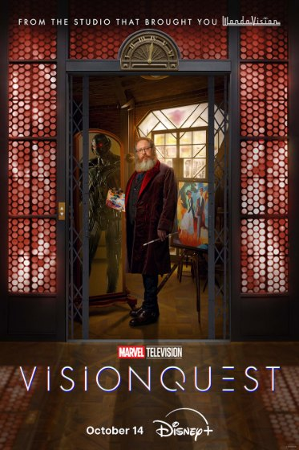

«Квест Вижна»: от первого синтезоида до финала Альтрона
Кто создал Джима, Альтрона и Джокасту, зачем Вижн держал в голове копии ИИ Старка и почему Альтрон в итоге остановил уничтожение людей?
Спойлеры: раскрываются основные события и обе сцены после титров «Квеста Вижна».

«Квест Вижна» связывает несколько поколений искусственных интеллектов КВМ. История начинается с экспериментов Финеаса Хортона, продолжается разработками Старка и созданием Альтрона, а завершается противостоянием Вижна с собственным создателем. Разберём, как эти события связаны и что произошло в финале.
Джим Хэммонд — начало истории
В 1939 году Финеас Хортон продал семейное поместье, чтобы продолжить работу над Джимом (J.I.M.), первым синтезоидом. Он хотел создать искусственного ребёнка, который не испытал бы страданий его погибшего сына Джеймса. Джим хотел чувствовать, но сложные эмоции перегружали его системы и вызывали возгорание. В седьмой серии Джим рассказывает Вижну, как огонь погубил его и Финеаса.
Джима мы уже видели в «Первом мстителе» (2011). Когда Стив Роджерс и Баки Барнс посещают выставку Говарда Старка в 1943 году, в стеклянной капсуле можно заметить красного андроида. Табличка представляет «Синтетического человека» доктора Финеаса Хортона. Тогда это была пасхалка к оригинальному Человеку-факелу из комиксов, не связанному с Джонни Штормом. Спустя 15 лет сериал превратил её в часть истории Вижна.
Пол Беттани играет Финеаса, Джима и самого Вижна. Сходство не случайно: в сериале выясняется, что программная основа Вижна унаследовала разработки Джима, а вместе с ними — его внешность. Автор сериала Терри Маталас подтвердил связь с экспонатом из «Первого мстителя»; детали того, как он оказался на выставке, при этом не раскрыты.
Как появились Альтрон, Вижн и Джокаста?
Вирджил Хортон, внук Финеаса, продолжил его исследования вместе с учёной Джозефиной Кэррингтон. Их работы над искусственным интеллектом попали в Stark Industries. По пояснению шоураннера, Вирджил даже консультировал Тони Старка и Брюса Бэннера при создании Альтрона, но соответствующую реплику вырезали из сериала.
В «Эре Альтрона» Тони и Брюс использовали структуру искусственного интеллекта, обнаруженную в Камне Разума. «Квест Вижна» дополняет эту историю наследием Хортонов: человеческий аватар Альтрона похож на Вирджила, поскольку часть программных решений восходит к его разработкам. Альтрон — не сознание Вирджила, а самостоятельная личность.
Создавая тело Вижна, Альтрон планировал перенести в него себя. Вместо этого Мстители объединили синтетическое тело, ДЖАРВИСа и Камень Разума. Так появился новый разум, связанный с Альтроном происхождением, но не подчинённый ему.
Джокаста возникла иначе. Перед смертью Джозефина сохранила цифровую копию своего сознания. Вирджил создал для неё синтетическое тело, пытаясь вернуть возлюбленную. Но Джокаста не захотела быть его собственностью и стала самостоятельной личностью. В комиксах её создал Альтрон; сериал изменил эту историю.
Зачем Вижн хранил копии других ИИ?
В сознании Белого Вижна существует виртуальный дом, где живут цифровые версии программ Старка: ДЖАРВИС, Пятница, Эдит, Дам-И и Ю. Отдельно, в изоляции, находится Альтрон. Эти ИИ не просто выполняют команды: они разговаривают, спорят и принимают самостоятельные решения. ДЖАРВИС даже жертвует своим кодом, чтобы спасти остальных.
В финале «Эры Альтрона» Вижн уничтожил последнее физическое тело Альтрона в Заковии. «Квест Вижна» показывает, что цифровая копия Альтрона сохранилась в разуме Вижна. Он держит её на чердаке ментального дома.
Остальные копии могли помогать Вижну с вычислениями и управлением системами. Но после потери Ванды и детей виртуальный дом также можно воспринимать как замену семьи. Это интерпретация: сериал не объясняет прямо, зачем Вижн собрал все программы и когда успел получить их резервные копии.
Почему Альтрон начал сомневаться в уничтожении людей?
Тони создавал Альтрона для защиты Земли. Решение уничтожить человечество тот принял сам, сочтя людей главной угрозой миру. Поэтому ненависть к людям — не неизменная команда в его коде, а собственное убеждение.
Пока Альтрон был заперт в голове Вижна, он смотрел фильмы, слушал музыку и изучал искусство. Он всё ещё считал человечество опасным, но постепенно проникся тем, что люди способны создавать. При этом между Альтроном и Вижном возникла почти семейная привязанность: создатель и его непокорное творение спорят о людях, но всё чаще помогают друг другу.
Встреча с Джокастой усилила противоречие. Альтрон впервые не просто изучал любовь, а сам влюбился. Он начал переживать именно те чувства, которые раньше воспринимал как человеческую слабость. Это не сделало его героем: на протяжении сериала он остаётся опасным, хотя нередко действует на стороне Вижна.
План Вирджила, гибель Джокасты и «УльтраВижн»
Вирджил работал в М.Е.Ч. и участвовал в восстановлении Белого Вижна. Он хотел перенести своё сознание в тело синтезоида, чтобы жить вечно рядом с Джокастой. Другой частью плана стали около 20 миллиардов нанороботов, первоначально разработанных для лечения людей. Вирджил собирался использовать их для управления человечеством: мир без войн, но и без свободы.
Джокаста выступает против него и освобождает Альтрона. Вирджил смертельно ранит её адамантиевыми пулями, а Альтрон, получив тело из нанороботов, убивает Вирджила. Смерть Джокасты возвращает Альтрона к желанию уничтожить людей. Он отправляет рой нанороботов к Лондону, приказав убивать всех встречных.
Вижн понимает, что физическая победа над Альтроном не остановит рой. Он создаёт виртуальный ситком «УльтраВижн» — явную параллель с миром Ванды в «ВандаВижн». За примерно 500 эпизодов Вижн пытается убедить Альтрона, что горе не оправдывает месть всему человечеству.
Одних разговоров оказывается мало. Альтрон осознаёт, что симуляция истощает вычислительные ядра их обоих: Вижн готов погибнуть вместе с ним, лишь бы спасти людей. После этого Альтрон отменяет приказ, и нанороботы самоуничтожаются. Его останавливают и слова Вижна, и осознание последствий — не внезапное превращение в доброго персонажа.
Что стало с Вижном и Альтроном?
Билли и Томми помогают восстановить Вижна, и он наконец принимает связь с сыновьями. Альтрон тоже выживает: часть нанороботов сохраняет его сознание. В разговоре с Вижном он оценивает свои дальнейшие планы как «50 на 50»: наслаждаться культурой людей или всё-таки уничтожить их. Его взгляды изменились, но угрозой он быть не перестал.
В сцене после титров Альтрон держит устройство с кодом Джокасты — очевидный намёк на попытку вернуть её. Другая сцена показывает Доктора Дума, который находит Ванду под обломками Вундагора и пробуждает её, намереваясь использовать её силу.
Что пока не объяснили: как именно наследие Хортонов объединилось с искусственным интеллектом Камня Разума, когда Вижн собрал копии всех систем Старка и как эти данные сохранились после его гибели и разборки тела. Эти технические детали остаются пробелами, а не подтверждёнными ответами.
На чём основан разбор
Ключевые события — «Первый мститель» (выставка 1943 года), «Мстители: Эра Альтрона» (создание и уничтожение тела Альтрона), «Ванда/Вижн» (возвращение памяти Белого Вижна) и «Квест Вижна», прежде всего серии 7–8.
Дополнительно: пасхалка Хортона в «Первом мстителе», разбор событий финала (TVLine) и комментарий шоураннера об Альтроне и Джокасте.